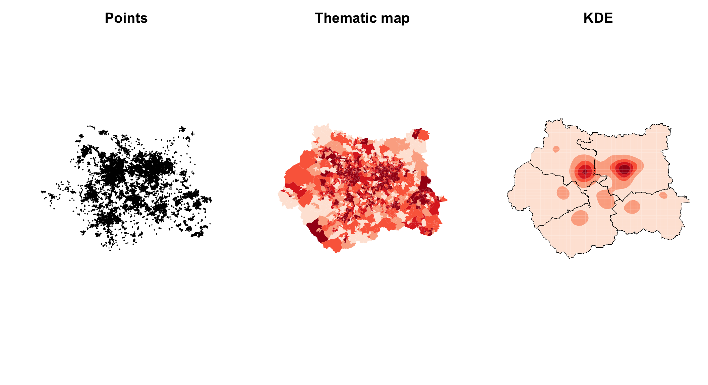
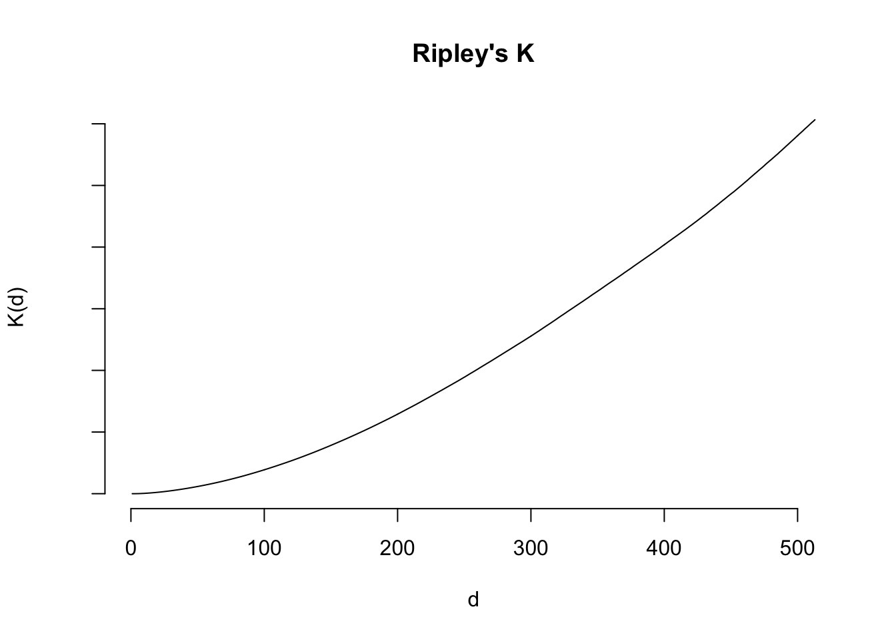

This R markdown document contains the code to produce the images in Section 4 (Methods and Tools to Analyse Point Patterns) of the chapter ‘Spatial-temporal Point Pattern Processes and Models’
Initialise the required R libraries. If R complains that any of these are not available, you can install them with install.packages("PackageName").
# Remember the default margins (useful later when they need changing temporarily)
default.mar <- par("mar")
library(GISTools) # A great GIS package; lots of other useful dependencies loaded as well
library(rgdal) # For reading shapefiles
library(classInt) # Jenks natural breaks
library(spatstat) # For Ripley's K and othersWe could generate a synthetic data set, but lets use a real one. Downoad the locations of somecrimes that occurred in West Yorkshire in May 2014 They are available to download from data.police.uk.
It will also be necessary to aggregate the point data, so the following will also read LSOA boundaries and aggreagte the crime data. These were downloaded from data.gov.uk and West Yorkshire was extracted separately.
# Because there is some randomisation in the crime data, only re-read it if this is the first time the script has run.
# Otherwise the results will be slightly different each time.
if (file.exists("./methods.RData")) {
print("Loading data from RData file")
load("./methods.RData")
} else {
print("Reading data")
# Read crime from 2014
crime.14 <- read.csv("data/2014-05-west-yorkshire-street.csv")
crime.14$Context <- NULL
crime.14 <- crime.14[complete.cases(crime.14),]
crime.14.spdf <- SpatialPointsDataFrame(coords=crime.14[,c("Longitude","Latitude")], data=crime.14, proj4string = CRS("+init=epsg:4326"))
crimes <- spTransform(crime.14.spdf, CRS("+proj=tmerc +lat_0=49 +lon_0=-2 +k=0.9996012717 +x_0=400000 +y_0=-100000 +ellps=airy +datum=OSGB36 +units=m +no_defs "))
# Read the LSOA boundaries and LAD boundaries
lsoa <- readOGR(dsn = "./data", "west_yorkshire_lsoa_2011" )
lad <- readOGR("./data/", "West_Yorkshire_lad_2011")
# The boundaries are British National Grid, but the proj4string varies slightly so use the same one as the crime data
proj4string(lsoa) <- CRS("+proj=tmerc +lat_0=49 +lon_0=-2 +k=0.9996012717 +x_0=400000 +y_0=-100000 +ellps=airy +datum=OSGB36 +units=m +no_defs")
proj4string(lad) <- CRS("+proj=tmerc +lat_0=49 +lon_0=-2 +k=0.9996012717 +x_0=400000 +y_0=-100000 +ellps=airy +datum=OSGB36 +units=m +no_defs")
# Remove any points from outside of the boundaries (as these will make the maps look funny)
crimes <- gIntersection(crimes, lad, byid=T)
# Now aggregate the points
lsoa@data$crimes <- 0 # Get the new colum ready
lsoa@data$crimes <- poly.counts(crimes, lsoa)
save.image(file="methods.RData")
}## [1] "Loading data from RData file"# Standard shading across all maps
COLOURS <- brewer.pal(9,'Blues')
BREAKS <- 8
# Compute KDE
crimes.kde <- kde.points( pts=crimes, h=7000, n=50, lims=lad) # 7km bandwidth and 50x50 grid
# Calculate shading
#kde.interval <- classIntervals(crimes.kde@data$kde, n = BREAKS, style = 'quantile')$brks
#kde.shades <- shading(kde.interval, cols=COLOURS)Draw a map showing raw points, a choroploeth map, and a density surface
doplot <- function() {
par(mfrow=c(1,3))
# Raw
plot(crimes, main = "Points", cex.main=2.0, cex=0.2)
# Choropleth
choropleth(lsoa, lsoa$crimes, border=NA)
title("Thematic map", cex.main=2.0, cex=0.2)
#KDE
masker = poly.outer(crimes.kde,lad,extend=100)
level.plot(crimes.kde)
add.masking(masker)
plot(lad, add=T, lwd=0.5, col=rgb(1, 1, 1, 0.0)) # (White fill and fully transparent)
title("KDE", cex.main=2.0, cex=0.2)
}
# Plot for the knitr'd document
doplot()## Warning in RGEOSBinTopoFunc(spgeom1, spgeom2, byid, id, drop_lower_td,
## unaryUnion_if_byid_false, : spgeom1 and spgeom2 have different proj4
## strings
# And a pgn for the book:
png(file="figures/map.png", width = 1080, height = 400, units = "px")
doplot()## Warning in RGEOSBinTopoFunc(spgeom1, spgeom2, byid, id, drop_lower_td,
## unaryUnion_if_byid_false, : spgeom1 and spgeom2 have different proj4
## stringsdev.off()## quartz_off_screen
## 2Calculate Ripley’s K and plot it against different levels of distance on a graph.
# NNI - this is how to calcualte the nearest neighbour index. Not used here.
#crimes.nni <- nni(crimes, win='extent')
# K
crimes.k <- Kest(unique.ppp(as.ppp(crimes)), correction='border')
# Plot K
WIDTH <- 10
HEIGHT <- 5
plot(crimes.k$border, type='l', xlab="d", ylab="K(d)", axes=F)
axis(1)
axis(2, labels=F)
title("Ripley's K")
# Now for the book
pdf(file="figures/k_function.pdf", width=WIDTH, height=HEIGHT)
plot(crimes.k$border, type='l', xlab="d", ylab="K(d)", axes=F)
axis(1)
axis(2, labels=F)
title("Ripley's K")
dev.off()## quartz_off_screen
## 2It is possible to coduct Getis-Ord GI* analysis in R, but in this case we have used ArcMap. All the script does here is write out the data so that it can be read by ArcGIS.
writeOGR(lsoa, dsn = "data/gi_star", layer = "lsoa", driver = "ESRI Shapefile", overwrite_layer = TRUE)